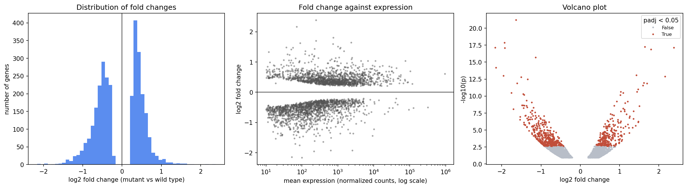

2 Session 2: Working like a computational biologist in Python
Sources for this page: Swaroop, C. H., A Byte of Python, https://python.swaroopch.com/ — CC BY-SA 4.0, commercial use permitted. Python fundamentals. The scientific-stack sections name NumPy, pandas, Matplotlib, seaborn, SciPy, scikit-learn, Biopython and PyTorch as tools, with usage demonstrated in original example code; no text is reused from their documentation. Which tools get a light refresher is informed by the prerequisite DA7066 course’s compendium (Arvestad, Helanow, Mörtberg & Sahlin), an internal planning reference. The dataset explored on this page is real published differential-expression data: Becares, N. et al. (2019), “Impaired LXRα Phosphorylation Attenuates Progression of Fatty Liver Disease”, Cell Reports 26(4):984-995, loaded from its public copy shared as example data by VolcaNoseR (Goedhart, J. & Luijsterburg, M.S., 2020, “VolcaNoseR is a web app for creating, exploring, labeling and sharing volcano plots”, Scientific Reports 10:20560). The globin records are fetched live from NCBI; every number on this page was read back from the notebook’s output.
Notebook: Session 2 — Working like a computational biologist in Python — the code behind this page. Download it to run it yourself.
Set up first. This course runs its notebooks on Google Colab. The lab is done in VS Code, with the notebook running on a Colab machine through Google’s Colab extension; the course notebook can also be opened in Colab in the browser. If you have not done so yet, follow Setup: install VS Code, git and the Colab extension, clone the course notebooks, and check that you can run a notebook on a Colab machine.
This session is largely a repetition of the Python course you have just finished, so it is not about new syntax. Instead, it is about the four things a computational biologist does with Python every day, using the libraries you have already met. If some of it is familiar, read it as a refresher and spend your time on the parts that are not:
- Represent data with the right object: arrays, DataFrames, biological sequence objects and, later, tensors.
- Explore data with summaries, filtering and plots, before trusting any number.
- Use existing tools, meaning libraries, documentation and online databases, rather than reinventing them.
- Solve problems when code does not work, using error messages, documentation, AI assistants and tests of your own assumptions.
To keep these four things concrete, the page follows one real dataset (a published RNA-seq experiment on mouse liver) and one real gene family (the human globins) all the way from representation to a small finished analysis. The mini challenge in Section 2.12 then leads straight into the lab.
2.1 Learning goals
By the end of this session you should be able to:
- choose between a list, a NumPy array, a pandas DataFrame, a Biopython
Seq/SeqRecordand a PyTorch tensor, and say what each is for; - explore an unfamiliar table: its shape, columns, summaries, filters and plots, and notice what the summaries tell you about how the data were made;
- plot first and test second, and pick a test that fits what the plot shows;
- read biological records from a local file or from NCBI;
- write a small class of your own, with
__init__, attributes and methods, and recognise the same shape in a PyTorch model; - get unstuck: read an error message, inspect objects, use the documentation and an AI assistant, and verify the answer;
- keep versions of your work with
git.
2.2 Notebooks: what they are and why we use them
Every notebook in this book runs on Google Colab: the labs from VS Code, the course notebooks also in the browser, as described in Setup. Before we use them, it is worth knowing what a notebook is and where its pitfalls lie.
A notebook (a .ipynb file, the Jupyter format) mixes three things in one document. It holds text (explanations, like this page), code cells, and the output of each cell (numbers, tables, plots, error messages), shown directly underneath it. You run one cell at a time, in whatever order you choose.
This makes notebooks well suited to exploring data, for three reasons:
- Run a small piece, look, adjust, re-run just that piece, without starting the whole analysis from the top.
- Results stay next to the code that made them, so you, a teacher or a colleague can see what was done and what came out.
- Text explains the reasoning, which a plain script does not.
In short, the big advantage of notebooks is their flexibility. A common use is data analysis: you might have a large dataset that takes time to load and process, and later want to make new plots or run additional statistical tests on it. If you write a program and modify it for each new test, you have to wait for the dataset to load every time, whereas in a notebook you load it once and then explore the data for as long as you want.
The price of this flexibility is hidden state. A notebook’s variables live in the memory of a running Python process (the kernel), not on the page. Running cells out of order, re-running one cell several times, or editing a cell without re-running it all leave the memory different from what the page shows. The notebook has a small demonstration (Section 2.10), in which a cell that adds 1 to counter gives a new number every time you re-run it, although its code never changes. This is one of the most common sources of confusion for new notebook users, and the remedy is simple:
Before submitting or sharing a notebook: Restart Kernel → Run All.
This clears the memory and runs every cell from top to bottom, in order. If the notebook still runs and gives the same results, what the page shows is what the code does.
2.3 Scientific Python objects
Different objects represent different kinds of data, and each gives you the operations that make sense for its kind. The examples below, which you can run in the notebook, hold the same three transcript lengths (in nucleotides) in increasingly specialised objects:
lengths = [628, 577, 576] # a list: a general container
print(lengths * 2) # [628, 577, 576, 628, 577, 576]: repeats the list!
import numpy as np
arr = np.array(lengths) # a NumPy array: numbers, with maths
print(arr * 2, arr.mean(), arr.shape) # [1256 1154 1152] 593.67 (3,)
import pandas as pd
genes = pd.DataFrame({"gene": ["HBB", "HBA1", "HBA2"], "length": lengths})
print(genes[genes["length"] > 600]) # a table with named columns and mixed types| Object | Represents | Useful operations |
|---|---|---|
list |
any collection of things | append, loop over, index |
NumPy ndarray |
numbers of one type, in any number of dimensions (Session 1’s vectors and matrices) | elementwise maths, means, matrix products, boolean masks |
pandas DataFrame |
a table: named columns, possibly of different types, one row per observation | select and filter by name, group, summarise, read and write CSV files |
Biopython Seq / SeqRecord |
a biological sequence / a sequence with its identifier, description and annotations | reverse complement, translate, GC content, parse and write FASTA or GenBank (Section 2.7) |
PyTorch Tensor |
an array that can live on a GPU and remember how it was computed | everything an array does, plus automatic gradients (Session 7 onwards) |
Choosing the right object therefore matters. On a list, lengths * 2 silently does something you did not mean, whereas on an array it does the maths you expect and multiplies every number by 2.
Looking ahead: tensors and autograd. A PyTorch tensor is the array of deep learning, and its extra trick is automatic differentiation. PyTorch records every operation on a tensor, and .backward() replays them in reverse, applying Session 1’s chain rule at each step. As a result, Session 1’s gradient practice problem, done by hand there, takes only a few lines of PyTorch code:
import torch
x0 = torch.tensor(1., requires_grad=True)
x1 = torch.tensor(2., requires_grad=True)
f = 3 * x0**2 + 2 * x0 * x1
f.backward()
print(x0.grad, x1.grad) # tensor(10.) tensor(2.): Session 1's answer, (10, 2)From Session 7 onwards you therefore never write a derivative by hand again. You call .backward() instead.
2.4 Exploring a biological dataset
With the objects in place, we can turn to real data. The first dataset comes from a mouse-liver RNA-seq experiment (Becares et al., 2019). All the mice were fed a high-fat/high-cholesterol diet, and the livers of mice carrying a mutant form of the transcription factor LXRα (S196A, which cannot be phosphorylated at that site) are compared with those of wild-type mice, three per group. The data have already been analysed with DESeq2, so here we explore the resulting table. It contains one row per gene, with the gene’s mean expression (baseMean), log2 fold change, p-value and adjusted p-value.
url = "https://raw.githubusercontent.com/JoachimGoedhart/VolcaNoseR/master/Becares-diffgenes_HFHC.csv"
df = pd.read_csv(url)
df.shape # (3001, 9): 3,001 genes, 9 columns
df.columns # Gene, baseMean, log2_FoldChange, FC, lfcSE, stat, pvalue, padj, minus_log10_pvalue
df.head() # the first five rows
df.describe() # count, mean, spread and range of every numeric columnSummaries tell you how the data were made. describe() shows that the largest p-value in the file is 0.12, and the largest adjusted p-value 0.50. Under the null hypothesis raw p-values are spread evenly between 0 and 1, so a genome-wide table would reach close to 1, and this file almost certainly does not contain all genes. It is most likely a pre-filtered list of the 3,001 genes with \(p < 0.12\), and any conclusion about “all genes” drawn from it would be wrong. Always look at the summaries before you look at a result.
Selecting and filtering use conditions on columns:
significant = df[df["padj"] < 0.05] # 656 genes
strong = df[(df["padj"] < 0.05) & (df["log2_FoldChange"].abs() > 1)] # 171 genes: 46 up, 125 down
df.sort_values("padj").head() # the most significant genesThe most significant gene is Osbpl3 (adjusted \(p = 8 \times 10^{-18}\), down 3.1-fold). Among the significant genes, the largest increase is in Cyp2c69 (log2 fold change 2.39, 5.2-fold up).
NumPy calculations work directly on columns. Mean expression, for example, spans five orders of magnitude, from 10 to 954,964 (albumin, Alb), with a median of 329. It is therefore usually worked with as np.log10(df["baseMean"]).
2.5 Seeing the data
A summary is only a handful of numbers, whereas a plot shows all 3,001 genes at once. Three plots answer three different questions:

import matplotlib.pyplot as plt
import seaborn as sns
fig, axes = plt.subplots(1, 3, figsize=(15, 4))
axes[0].hist(df["log2_FoldChange"], bins=50) # distribution of one variable
axes[1].scatter(df["baseMean"], df["log2_FoldChange"], s=5) # relationship between two
axes[1].set_xscale("log") # skewed data: use a log axis
df["significant"] = df["padj"] < 0.05
sns.scatterplot(data=df, x="log2_FoldChange", y="minus_log10_pvalue",
hue="significant", s=8, ax=axes[2]) # seaborn: plot straight from a DataFrame- A histogram shows the distribution of one variable.
- A scatter plot shows the relationship between two.
- seaborn draws from a DataFrame by column name, and colours points by a third column (
hue=) in one argument. - Plots reveal how the data were made, too. The empty band around zero in the left and middle panels is the pre-filtering from Section 2.4 seen again. Genes whose expression barely changed rarely reach \(p < 0.12\), so they are not in the file. A complete experiment would have its tallest histogram bar at zero.
- Label your axes with units, and use a log scale for data that span orders of magnitude, such as expression levels. On a linear axis, the middle panel would show 3,001 points squeezed against the left edge, plus a few outliers.
2.5.1 Plotting libraries, and what you know from R
The code above uses two of the four plotting libraries you will meet in Python. You do not need all of them, but it helps to know what each is for:
| Library | What it is for | The nearest thing in R |
|---|---|---|
| matplotlib | the foundation: full control of every line, label and axis; the others are built on it | base graphics (plot, hist, par(mfrow = ...)) |
| seaborn | statistical plots straight from a DataFrame by column name: distributions, groups, fitted lines with confidence bands, small multiples | ggplot2 in spirit (hue= is colour =, col= is facet_wrap) |
| plotnine | the grammar of graphics, almost word for word ggplot2: ggplot(df, aes(...)) + geom_point() |
ggplot2 itself |
| plotly | interactive plots: hover over a point to see which gene it is, zoom, hide a group | plotly (the same library) and ggplotly() |
If you learnt ggplot2 in your R course, the habits carry over. Python’s DataFrame plays the role of R’s data frame, and seaborn or plotnine take column names as ggplot2 does (as strings in Python). The main difference is matplotlib’s: a figure (fig) and its panels (ax) are objects that you change by calling their methods, such as ax.set_xscale("log"), instead of adding layers with +.
Notebooks make plotting interactive in two ways. First, you change a plot and re-run only its cell, with the data already in memory, and see the result at once (the same as running one chunk at a time in RStudio). Second, a running notebook can show plots you interact with: plotly’s hover answers the first question you have about any outlier (“which gene is that?”), and a slider (from ipywidgets) can redraw a volcano plot as you move its p-value and fold-change thresholds. For a figure in a report or paper, use a static plot, label the axes with units, leave out the title (the caption says what the figure shows) and save it at a high resolution, for example fig.savefig("volcano.png", dpi=300, bbox_inches="tight").
The optional notebook notebooks/session02-plotting-gallery.ipynb shows each library on this dataset, with the ggplot2 code next to its plotnine version, plotly’s hover and zoom, and a volcano plot with sliders. Run it on Colab, because the interactive parts need a running notebook. Nothing in the lab or the exam depends on it.
2.6 Asking quantitative questions
Plot first, test second. Suppose we ask whether the size of a gene’s fold change is related to how highly the gene is expressed. A test on the raw numbers says no:
from scipy import stats
stats.pearsonr(df["baseMean"], df["log2_FoldChange"].abs()) # r = -0.01, p = 0.43The middle plot, however, says yes, because lowly expressed genes have larger fold changes. The two disagree because Pearson’s correlation measures a linear relationship, and on the raw scale a handful of hugely expressed genes (albumin at 954,964) dominate it. The solution is to test what the plot shows:
stats.pearsonr(np.log10(df["baseMean"]), df["log2_FoldChange"].abs()) # r = -0.30, p = 2e-64
stats.spearmanr(df["baseMean"], df["log2_FoldChange"].abs()) # rho = -0.42, p = 2e-129Spearman’s correlation uses only the ranks, so the scale does not matter to it. Had you run the first test without plotting, you would have reported “no relationship”. (Why lowly expressed genes show larger fold changes is itself a lesson. With few reads per gene, the estimates are noisier. Session 8 returns to noise and evaluation.)
Existing tools for standard questions. SciPy and scikit-learn implement the standard methods, so you do not have to:
stats.ttest_ind(control, treatment, equal_var=False)is Session 1’s Welch t-test. For Session 1’s control \((5.1, 4.9, 5.3, 5.0)\) and treatment \((7.2, 6.8, 7.5, 7.0)\) it gives \(t \approx -11.9\), \(p \approx 0.0001\). SciPy’s default,equal_var=True, is Student’s test, which assumes equal variances.scipy.cluster.hierarchy.linkagebuilds a tree by repeatedly merging the closest clusters. This is the algorithm behind Session 4’s guide tree.- scikit-learn has ready-made models (
LinearRegression,LogisticRegression,train_test_split,MLPClassifier, …). Sessions 7-9 build these by hand so that you see the mechanics, but in practice you would call the library.
Check your understanding:
2.7 Biological objects
Besides tables of numbers, a computational biologist works with sequences. Biopython’s Seq is a sequence that knows biology, so you never have to write a complement table yourself. As an example, we use human beta-globin (HBB, accession NM_000518.5). The first ten codons and the corresponding amino acids can be examined like this:
from Bio.Seq import Seq
from Bio.SeqUtils import gc_fraction
hbb = Seq("ATGGTGCATCTGACTCCTGAGGAGAAGTCT")
len(hbb) # 30
gc_fraction(hbb) # 0.5
hbb.reverse_complement() # AGACTTCTCCTCAGGAGTCAGATGCACCAT
hbb.translate() # MVHLTPEEKSA SeqRecord wraps a Seq together with what a database knows about it: record.id, record.description, and record.features, the annotated regions such as the coding sequence (CDS). Here record.seq and record.features are attributes, and record.seq.translate() is a method. A SeqRecord is thus an object, built from a class that Biopython defines, and it bundles data with the functions that act on it. The next section shows how to write such a class yourself.
2.8 Your own objects: classes
Biopython’s SeqRecord is one example of a pattern that runs through the whole scientific Python stack, and you will write such classes yourself. Every PyTorch model from Session 8 onwards is a class, so it is worth learning the pattern properly now, on a biological example, before it turns up in a neural network.
A class is a blueprint, and each object made from it is one instance with its own data. The data are the object’s attributes, and the functions that belong to the class and act on those data are its methods. A class for proteins could look like this:
from Bio.SeqUtils import molecular_weight
class Protein:
"""A protein: a name and an amino-acid sequence."""
def __init__(self, name, sequence):
self.name = name # attributes: the data each object carries
self.sequence = sequence
def length(self): # a method: a function that uses the object's own data
return len(self.sequence)
def composition(self, residues):
"""The fraction of the sequence made of the given residues."""
return sum(self.sequence.count(aa) for aa in residues) / self.length()
def weight(self):
return molecular_weight(self.sequence, seq_type="protein")
beta = Protein("HBB", "MVHLTPEEKSAVTALWGK...") # the full 147 residues of UniProt P68871
beta.length() # 147
beta.composition("AVLIMFWC") # 0.442, the hydrophobic fraction
beta.weight() # 15998 (daltons)Two names need explaining. __init__ is run once, automatically, when an object is created: Protein("HBB", ...) makes a new, empty object and passes it to __init__ together with the two arguments, and __init__ stores them as attributes. self is that object. Every method receives the object it was called on as its first argument, so beta.length() is really Protein.length(beta), and inside the method self.sequence means this protein’s sequence. A hundred Protein objects share the same methods but each has its own name and sequence.
Methods whose names begin and end with two underscores are special methods, which Python calls for you. __init__ is the first you meet. Defining __len__ makes len(beta) work, __repr__ decides what print(beta) shows, and __call__ makes the object itself callable like a function. The notebook adds the first two to Protein.
Inheritance lets a new class start from an existing one. An Enzyme is a Protein that also has an EC number, so it inherits everything Protein has and adds one attribute:
class Enzyme(Protein):
def __init__(self, name, sequence, ec_number):
super().__init__(name, sequence) # let Protein set name and sequence
self.ec_number = ec_number
lyz = Enzyme("LYZ", "KVFERCELARTLKRLG...", "3.2.1.17") # human lysozyme, mature chain (130 aa)
lyz.weight() # 14701: a method inherited from Proteinsuper().__init__(...) runs the parent class’s __init__, so that the attributes it sets up exist in the new object too. Forgetting it is a common bug: the object is created without error, and fails later when a method looks for self.sequence.
Looking ahead: a PyTorch model is a class. This is exactly the shape of every neural network in Sessions 8-12. A model inherits from nn.Module, calls super().__init__(), creates its layers as attributes in __init__, and describes the computation from input to output in a method called forward:
import torch.nn as nn
class TinyNet(nn.Module):
def __init__(self):
super().__init__() # nn.Module sets itself up first
self.layer = nn.Linear(3, 1) # a layer is an attribute
def forward(self, x):
return self.layer(x)
model = TinyNet()
model(torch.ones(1, 3)) # runs forwardNote that you call model(x), not model.forward(x). Calling an object runs its special method __call__, which nn.Module defines to do some bookkeeping and then call your forward. You never need to know more about that bookkeeping than that it is there, but knowing the pattern makes a PyTorch model readable: the attributes are what the model has, its layers and their weights, and forward is what it does. Because the layers are attributes, nn.Module can find all their weights for you, which is what training them in Session 9 relies on.
2.9 Data coming from somewhere
Real data arrive either from files on disk or from databases over the network. In both cases Python gives you a file handle, an object you read from. You open it with with, which closes it again automatically when the block ends, even if an error happens inside:
from Bio import SeqIO
with open("globins.fasta") as handle: # a local FASTA file
for record in SeqIO.parse(handle, "fasta"):
print(record.id, len(record.seq))Compressed files need no separate unpacking. Sequence data usually come as .fasta.gz or .fastq.gz, and gzip.open(path, "rt") gives a handle that SeqIO.parse reads directly:
import gzip
with gzip.open("reads.fasta.gz", "rt") as handle:
records = list(SeqIO.parse(handle, "fasta"))Archives in .zip and .tar.gz format hold several files (the capstone project’s data, for example, come as a .zip). They are opened with the standard-library modules zipfile and tarfile, which list the contents with .namelist() or .getnames() and unpack them with .extractall().
Remote data work in the same way. pd.read_csv(url) read the table of Section 2.4 straight from the web, and for NCBI, Bio.Entrez returns a handle:
from Bio import Entrez, SeqIO
Entrez.email = "your.name@student.su.se" # NCBI requires a contact address
with Entrez.efetch(db="nuccore", id="NM_000518.5", rettype="gb", retmode="text") as handle:
record = SeqIO.read(handle, "genbank")
print(record.description, len(record.seq)) # Homo sapiens hemoglobin subunit beta (HBB), mRNA 628NCBI allows about three requests per second without an API key. You should therefore fetch many records in one request, or pause between requests, rather than hammer the server in a fast loop.
Check your understanding:
2.10 When you don’t know how to do something
Everyone’s code fails, all the time, so the useful question is how to notice and fix the failures. There are three kinds of mistake, and they are not equally easy to catch:
- A Python error. Python stops and tells you what went wrong, for example a
KeyErrorwhen a column name is misspelled. - Correct code, wrong analysis. The code runs, but it does not answer your question, for example because you plotted GC content on the x-axis when you meant length, or filtered on the p-value when you meant the adjusted p-value. Nothing fails.
- A biologically nonsensical result. The code runs and the numbers look reasonable, but they cannot be right. Computing a globin’s protein length as its mRNA length divided by three, for example, gives 654 amino acids for cytoglobin, while globins are about 150 amino acids long. (The mRNA includes untranslated regions, and only the coding sequence is translated.)
AI assistants are very good at removing mistakes of the first kind. They do much less to stop the second and third kinds, which you catch only by asking whether the result answers your question and whether it is biologically plausible. For the first kind, experienced programmers follow a routine for getting unstuck:
read the error → inspect → documentation → AI assistant (or google) → verify.
Read the error message, from the bottom. The last line says what went wrong, and the arrow above it says where in your code. Asking for a column that does not exist, for example, gives:
----> 1 df["log2FC"].mean()
KeyError: 'log2FC'On a DataFrame, a KeyError means “no column with that name”.
Inspect the objects involved. Here df.columns shows that the column is called log2_FoldChange. The same few tools answer most questions:
type(x): what kind of object is this?x.shape,len(x),df.dtypes: how big is it, and what is in it?df.head(): what does it actually look like?help(x)orx?in a notebook: what can it do?
Read the documentation. Every library on this page has a user guide and an API reference, and the documentation is the authority on what a function does in your version. Old tutorials, for example, still write from Bio.SeqUtils import GC, which fails in current Biopython (1.86 when this page was written):
ImportError: cannot import name 'GC' from 'Bio.SeqUtils'The documentation names its replacement, gc_fraction.
Ask an AI assistant, if it is useful, and ask well. Assistants are good at explaining an error message, suggesting which function to use, and writing a first draft. Give them what a human helper would need:
- the full error message;
- a small example of your data (
df.head()); - the library versions;
- what you expected, and what you tried.
Then verify. Assistants can invent functions and arguments that do not exist, use outdated APIs (like GC above, because they learned from the same old tutorials), or write code that runs but computes the wrong thing. The last case is the dangerous one, because nothing fails. Treat the answer as a suggestion, and check it:
- run it on a tiny example whose answer you know;
- check shapes and ranges;
- look up any function you do not recognise.
What is allowed in graded work is set out in the course rules on Canvas.
Test your assumptions in code. An assert stops the notebook when something you believe turns out to be false:
assert df["pvalue"].between(0, 1).all(), "p-values must lie between 0 and 1"
assert not df["Gene"].duplicated().any(), "one row per gene"
assert len(record.seq) == 628, "HBB mRNA should be 628 nt"The notebook trap: stale state. A notebook’s variables live in memory, independently of where the cells sit on the page. If you run cell 3, then cell 7, and then edit cell 3 without re-running it, cell 7 still uses the old value. The page then says one thing while the memory holds another. When a result surprises you, use Restart Kernel → Run All. It clears the memory and runs every cell from top to bottom, and it is the only way to be sure that the output matches the code (see the box at the start of the page).
2.11 A tool outside Python: git
One tool outside Python is part of everyday work. git keeps the history of a folder (a repository) as a series of snapshots (commits). You can therefore see what changed, go back to a version that worked, and share work through GitHub. In this course you run git on your own laptop, in VS Code’s terminal: clone the course repository there, open its notebooks in VS Code, and run them on a Colab machine. Keep in mind that the files you commit are the ones on your laptop, while anything a notebook writes while it runs ends up on the Colab machine (see Setup).
git clone https://github.com/ElofssonLab/kb8029-book.git # a copy of the course notebooks
git status # what has changed since the last commit?
git add analysis.ipynb # choose what goes into the next snapshot
git commit -m "Add volcano plot" # take the snapshot, with a message saying why
git log --oneline # the history
git pull # fetch others' changes (git push sends yours to your own repository)Commit small, working steps, with messages that say why. Do not commit large data files, passwords or keys; list them in a .gitignore file instead. For further reading, see the Software Carpentry lessons The Unix Shell and Version Control with Git (CC BY 4.0).
2.12 Mini challenge: a small analysis, start to finish
The mini challenge puts the pieces together on the globin family, the paralogous genes that Session 4 aligns:
- Fetch the six human globin mRNAs from NCBI: HBB (
NM_000518.5), HBA1 (NM_000558.5), HBA2 (NM_000517.6), MB (NM_001382809.1), NGB (NM_021257.4) and CYGB (NM_134268.5). - Represent them as a DataFrame: one row per gene, with the mRNA length, GC fraction and the length of the protein, from the record’s CDS feature.
- Calculate something: how much of each mRNA is coding sequence?
- Plot something: protein length against mRNA length.
- Explain what you found, in two or three sentences.
The notebook has a worked solution, which finds the following:
| Gene | mRNA (nt) | GC fraction | Protein (aa) | Untranslated (nt) |
|---|---|---|---|---|
| HBB | 628 | 0.51 | 147 | 184 |
| HBA1 | 577 | 0.64 | 142 | 148 |
| HBA2 | 576 | 0.64 | 142 | 147 |
| MB | 1,286 | 0.55 | 154 | 821 |
| NGB | 1,778 | 0.62 | 151 | 1,322 |
| CYGB | 1,962 | 0.62 | 190 | 1,389 |
The proteins are all about the same size (142-190 amino acids, one globin fold each), but the mRNAs differ more than threefold in length. Almost all of the difference is untranslated sequence (UTRs), which ranges from 147 nt in HBA2 to 1,389 nt in CYGB. A transcript’s length therefore says little about its protein. With six genes, Pearson’s correlation between mRNA and protein length is \(r = 0.78\), but \(p = 0.07\), so a strong-looking correlation from few points is only weak evidence.
Check your understanding:
2.13 The course notebook
notebooks/session02-working-in-python.ipynb follows this page section by section and runs everything above. It covers the objects, the exploration and plots of the Becares data, the tests, Biopython, the Protein and Enzyme classes and a first PyTorch model, reading local, compressed and remote data, a debugging walk-through, and the solution to the mini challenge. Open it in Google Colab, or download it and run it on a Colab machine from VS Code.
2.14 The lab
The lab notebook, notebooks/session02-lab.ipynb, continues from the mini challenge, with less help at each step. Lines to complete are marked with todo(...), which stops the cell with a message saying what is missing. The lab has three parts:
Fill in: complete the marked lines in working code. You explore the same RNA-seq table with other columns and thresholds, plot first and test second, run
Seqoperations on a mystery fragment, fetch its record from NCBI into a local file and back, and finish a smallTranscriptclass for that record.Adapt: change working code to answer new questions. You find the most strongly down-regulated gene, fix a cell with three realistic bugs (one of which runs without an error), and apply the mini challenge’s function to six more globin genes.
Solve: one open challenge, with a specification and hints only. Across all twelve globins, does a longer mRNA mean a longer protein? You explain what you found in a few sentences, including what to do with the one gene that stands out.
Three more challenges follow as optional extras, which are not part of the quiz. In the first you download a gene (human leptin) with Entrez and Biopython and plot GC content along its mRNA. The second explores the RNA-seq table with seaborn, and the third is a statistical analysis, plot first and test second, of whether up-regulated genes are expressed at a different level than down-regulated ones.
If time is short, take the core path first: Part A and B2 (fix three bugs). They are the core of the session (a data table, plots, sequences, NCBI, your own class, and debugging), and their questions are worth more than half the quiz points. Then do B1, B3 and Part C, which build on them, and the optional extras last.
Answer the Session 2 lab quiz on Canvas with your notebook’s own output.
2.14.1 Submitting this lab
This lab is administered through Canvas, not through this book. See the course’s Canvas page for the current quiz, the deadline and how to submit.
2.15 Further watching
The animations in the 3Blue1Brown videos used throughout this course are made with Manim, an open-source Python library written by Grant Sanderson, the creator of 3Blue1Brown. The two videos below show Python used for something very different from data analysis.
Animate Like 3Blue1Brown - No Coding Required (Manim Animation Using A.I.) (Sycamore), generating Manim animations with an AI assistant. Watch it with Section 2.10 in mind: how do you check that what the assistant produced is what you wanted?
How I animate 3Blue1Brown | A Manim demo with Ben Sparks (3Blue1Brown), a long demonstration of how the videos are built, scene by scene, in code:
2.16 What’s next
Session 3 uses Biopython’s database access at full scale, to retrieve and cross-reference real sequences across biological databases. Tensors and autograd return in Session 7’s gradient-descent lab, and in Session 8 the classes of Section 2.8 return as PyTorch models.